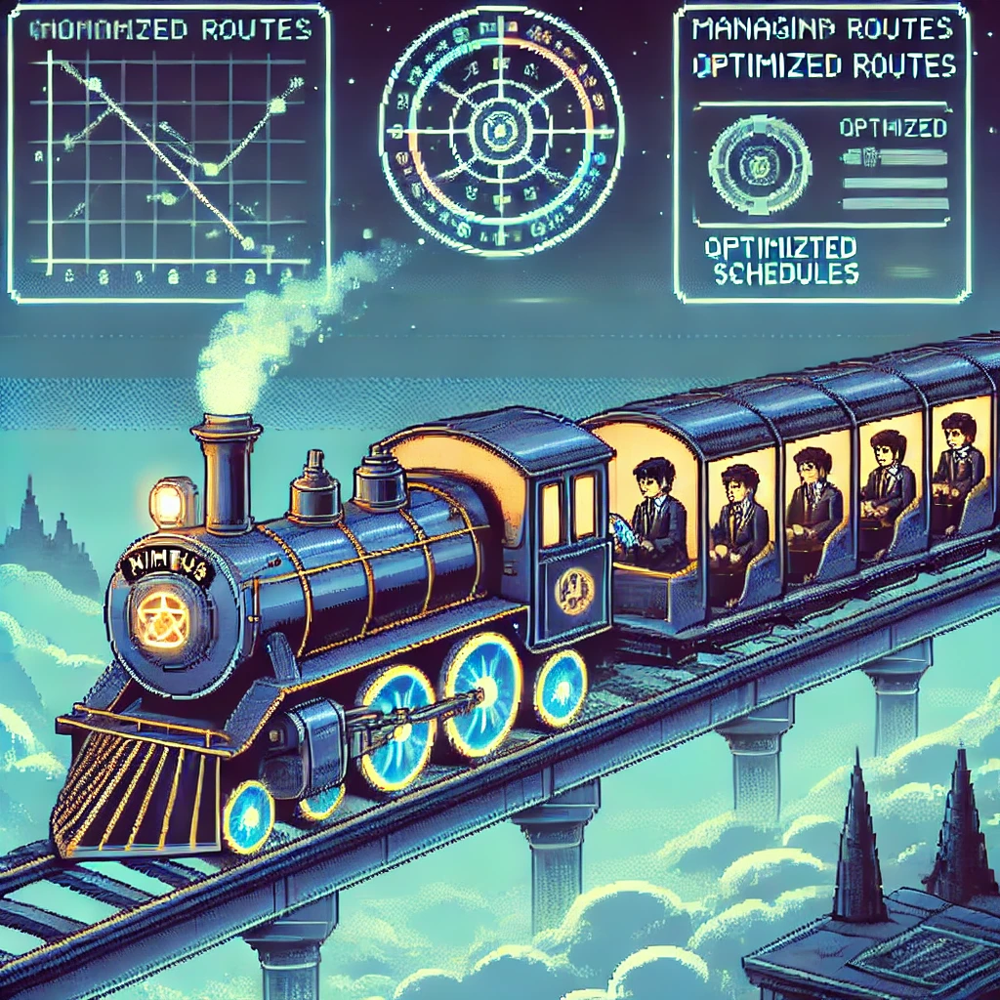

Nimbus Railway
Objectif
Dans le cadre d'un projet académique, nous avons conçu un site web avec Django, dédié à l'univers de JoJo's Bizarre Adventure. En s'appuyant sur l'API "Jikan", le site répertorie 170 personnages et propose plusieurs fonctionnalités, telles qu'une section de théories, un système de classement basé sur les likes et une consultation des préférences utilisateurs. Ce projet met en pratique nos compétences techniques dans un contexte thématique spécifique.
Documents
Technologies
Java FX
JAVA
MySQL
Compétences acquises
- Gérer le patrimoine informatique
- Travailler en mode projet